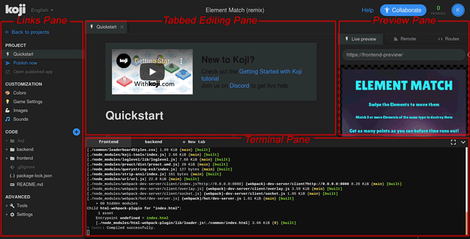
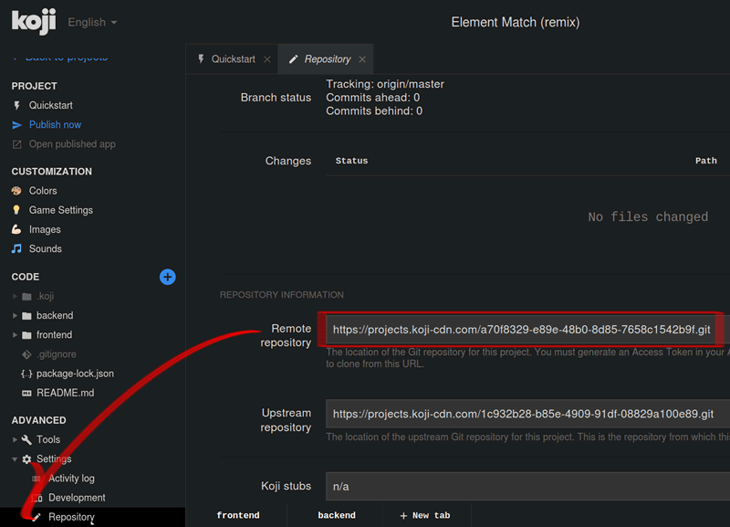
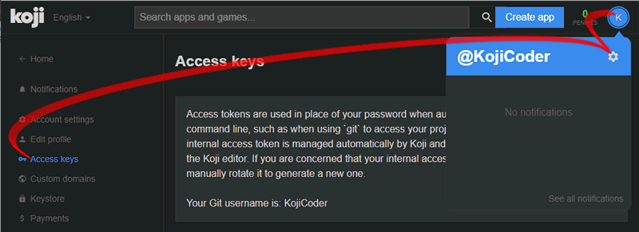
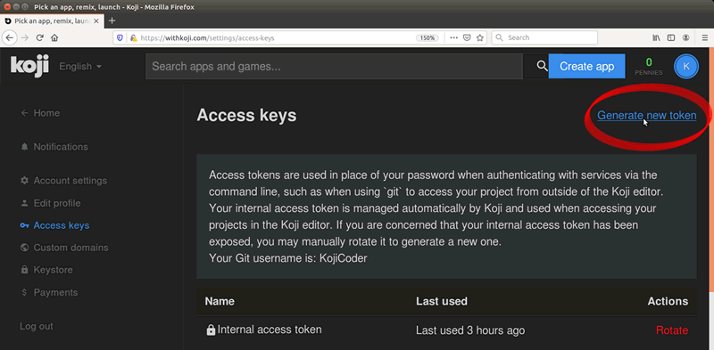

Koji provides a feature-rich online project editor, but as a developer you are probably used to working with your own suite of development tools. In this tutorial, I will describe how to clone a Koji project template to your development machine, so that you can use it locally as the starting point for your own game.
In order to develop your Koji project locally, you will need four tools:
origin repository on the Koji servers.The open source Node.js server environment. Koji uses Node.js and many add-on packages to deliver your web app to your users' browsers. You will need to install Node.js and its associated Node Package Manager (NPM) in order to run a Node server on your development computer.
A Terminal application. You will be typing commands that use `git` and `npm` to set up your development environment. Depending on your operating system, the application you use will be different. Here are some suggestions:
A text editor. This is where you will edit your code, and save it as plain-text files. A text editor that is designed for writing code will help you in many ways. Computers do exactly what you tell them to do, even if you tell them the wrong things. A dedicated text editor will make it easier for you to find the right words to use, and to find where you have used the wrong words or the wrong structure. You can find a list of recommended text editors here, including several which are both excellent and free.
You can find many game templates on the Scaffolds (For Developers) page. The instructions you find below should work well with any of them. For this tutorial, I am going to use Svarog's Element Match template, because it features in the How To video tutorial, and it illustrates a completed game with code that runs both on the backend and on the frontend.
Visit the Element Match project and click on the ∞ Remix button. Koji's Online Editor will open.
The Online Editor is divided into 4 sections:

At the top of the window, you will see an editable field with the default name of your new project: Element Match (remix). This name will be used to create the URL to your game, so it is a good idea to change it to something that you will be proud of now.
When you click on Remix (for any project), Koji creates a new clone of the project's Git repository just for you. This new repository will have a unique identifier string. If you clone the same project twice, you will get a different identifier string each time. The Koji repositories are stored at https://projects.koji-cdn.com/.
In order to clone the Koji repository locally, you will need three strings:
You will need to use the repository URL only once, you should know your Username by heart, but the Access Token is a 32-character randomly-generated hexadecimal number, and you will need to make a note of it in a safe place.
To find the URL of the Koji repository, open your project page and in the bottom left corner of the page, click on the disclose triangle beside the Settings icon to see a link to your Repository settings. Click on that to open the Repository Settings pane.

The Repository Settings pane will show links to two repositories. The first is called Remote Repository, and this is your personal repository. (The second, called the Upstream Repository, is the one your project was cloned from. You can ignore this... or create a fork of it if you want to suggest changes and make Pull Requests for it, so that other users of this template can benefit.)
Copy the Remote Repository URL, open a Terminal window, navigate to the directory where you want to save your project and type
git clone followed by a space, and then paste the repository URL that you just copied. Press the Enter key. Your Terminal window might now look something like this:
~/Repos/Koji$ git clone https://projects.koji-cdn.com/a70f8329-e89e-48b0-8d85-7658c1542b9f.git Cloning into 'a70f8329-e89e-48b0-8d85-7658c1542b9f'... Username for 'https://projects.koji-cdn.com':
The Terminal is asking for your Username, and after that it will ask for a Password. This password is not the same as the password you use to log in to Koji. It is a strong machine-generated access key, which only you should ever know about.
To generate an Access Key, you need to visit the Access key pane in your Settings page. There are two ways to find your Settings page:
When you are on your Settings page, press the Access keys link in the column on the left.

On the Access Key page, click on the Generate New Token link at the top right.

An overlay window will open containing a 128-bit number in hexadecimal form. Copy this number and keep it somewhere safe, where only you can find it easily. You will need to use it each time you clone, pull or push to the origin repository.
After you close the overlay window, this number will be known only as Token 1, and you will have no way to retrieve it from the Koji site again. You can, however, revoke your token and generate a new one if you have forgotten it, or if you believe that someone unauthorized has discovered it.
Your username for the Koji Git repository is the same as the name you chose when you registered with Koji. For reference, it is shown at the bottom of the paragraph above your list of tokens.
In the Terminal window, type in your Username, then press the Enter key. When asked for the password, paste in the 32-character hex string that you copied from the Access Key overlay window. (Remember than in some Terminal windows, Ctrl-C means "Cancel", so you may have to use Shift-Ctrl-C to paste). The password that you pasted will not be shown. Press the Enter key to start the cloning process.
~/Repos/Koji$ git clone https://projects.koji-cdn.com/a70f8329-e89e-48b0-8d85-7658c1542b9f.git Cloning into 'a70f8329-e89e-48b0-8d85-7658c1542b9f'... Username for 'https://projects.koji-cdn.com': KojiCoder Password for 'https://KojiCoder@projects.koji-cdn.com': remote: Counting objects: 15941, done. remote: Compressing objects: 100% (6156/6156), done. remote: Total 15941 (delta 9517), reused 15941 (delta 9517) Receiving objects: 100% (15941/15941), 9.35 MiB | 754.00 KiB/s, done. Resolving deltas: 100% (9517/9517), done. Checking connectivity... done.
You should now have a new directory with a beautifully arcane name like a70f8329-e89e-48b0-8d85-7658c1542b9f. For the rest of this tutorial, I'm going to imagine that you renamed it to MyKojiGame:
~/Repos/Koji$ mv a70f8329-e89e-48b0-8d85-7658c1542b9f/ MyKojiGame
Now you can cd into your MyKojiGame directory, and look at what has been cloned in:
~/Repos/Koji$ cd MyKojiGame/ ~/Repos/Koji$ ls -al total 40 drwxrwxr-x 6 kojicoder dev 4096 nov 5 16:38 . drwxrwxr-x 11 kojicoder dev 4096 nov 5 17:00 .. drwxrwxr-x 3 kojicoder dev 4096 nov 5 16:38 backend -rw-rw-r-- 1 kojicoder dev 516 nov 5 16:38 Dockerfile drwxrwxr-x 5 kojicoder dev 4096 nov 5 16:38 frontend drwxrwxr-x 8 kojicoder dev 4096 nov 5 16:38 .git -rw-rw-r-- 1 kojicoder dev 186 nov 5 16:38 .gitignore drwxrwxr-x 6 kojicoder dev 4096 nov 5 16:38 .koji -rw-rw-r-- 1 kojicoder dev 27 nov 5 16:38 package-lock.json -rw-rw-r-- 1 kojicoder dev 797 nov 5 16:38 README.md
The clone process installed all the project-specific files, but it only contains information about the servers and other dependencies that you will need to launch the game locally, but not the dependency files themselves. Before you can test the game on your development machine, you will need to install two sets of Node modules, one set to run the frontend and another set to run the backend.
To deal with the backend, cd to the backend director and run npm install. You'll have to wait for a minute or two while the Terminal window shows you what's happening.
~/Repos/Koji/MyKojiGame$ cd backend ~/Repos/Koji/MyKojiGame/backend$ npm install > core-js@2.6.9 postinstall /home/kojicoder/Repos/Koji/MyKojiGame/backend/node_modules/core-js > node scripts/postinstall || echo "ignore" npm WARN koji-project-backend@1.0.0 No description npm WARN koji-project-backend@1.0.0 No repository field. ... (more warnings and comments not shown) ... added 477 packages from 234 contributors and audited 8550 packages in 6.678s found 0 vulnerabilities
Dealing with the frontend is similar: cd to the frontend director and run npm install:
~/Repos/Koji/MyKojiGame$ cd ../frontend/ ~/Repos/Koji/MyKojiGame/frontend$ npm install > koji-tools@0.5.3 postinstall /home/kojicoder/Repos/Koji/MyKojiGame/frontend/node_modules/koji-tools > node ./cmd.js postinstall new config > preact@8.5.1 postinstall /home/kojicoder/Repos/Koji/MyKojiGame/frontend/node_modules/preact > webpack-cli@3.3.1 postinstall /home/blackslate/Repos/Koji/MyKojiGame/frontend/node_modules/webpack-cli > node ./bin/opencollective.js npm WARN meta-project@1.0.0 No repository field. npm WARN meta-project@1.0.0 No license field. ... (more warnings and comments not shown) ... added 996 packages from 358 contributors and audited 12188 packages in 14.023s found 345 vulnerabilities (1 low, 344 high) run `npm audit fix` to fix them, or `npm audit` for details
The Element Match game features both a frontend – so that you can play the game in your browser – and a backend – to access a database where the Leaderboard scores are stored.
If you want to run the Leaderboard, the procedure for launching your game is more complex. You will need to inform the frontend which URL to use to connect to the backend, and you will need to give the backend a couple of details concerning your project. And you will have to launch both the frontend and the backend servers on your local machine, using separate Terminal windows for each.
The Koji system reads in these items of information from environment variables. This ensures the data that is specific to deployment is kept separate from the code and configuration that is specific to your app.
To see what environment variables Koji uses to deploy your project, go to the Online Editor for your project, open a new Terminal tab at the foot the page and type:
env | grep 'KOJI_'
Below is the output that I get, edited to show only the relevant items. The values that you will see in your output will be unique to your project.
root@ip-172-31-15-24:/usr/src/app# env | grep 'KOJI_' ... KOJI_SERVICE_URL_backend=https://3333-48006672-6558-4f69-a40c-e4142c15067f.koji-staging.com ... (some variables not shown) ... KOJI_PROJECT_ID=a70f8329-e89e-48b0-8d85-7658c1542b9f KOJI_PROJECT_TOKEN=6679483a-dab8-4e89-9a83-6b56b53b4241 ...
The backend is configured by default to run on port 3333, while the frontend is configured to run at http://0.0.0.0:8080. When you launch the frontend, you need to tell it which URL it needs to use to access the backend. On Mac OS and other Unix-based operating systems, you can use the export command to do this.
Navigate to the frontend directory for your project, and then set the KOJI_SERVICE_URL_backend environment variable just before you call npm start. Your Terminal window might look something like this:
$ cd ..frontend/ $ export KOJI_SERVICE_URL_backend=http://0.0.0.0:3333 && npm start ... (some output not shown) ... ℹ ｢wds｣: Project is running at http://0.0.0.0:8080/ ℹ ｢wds｣: webpack output is served from / ... (more output not shown) ... ℹ ｢wds｣: Compiled successfully
The backend needs to have both a KOJI_PROJECT_ID and a KOJI_PROJECT_TOKEN in order to access the Leaderboard database. You can get the value of these variables from the Terminal tab in the Online Editor for your project. Type...
env | grep 'KOJI_PROJECT_'
... and copy the output that you get.
Open a new Terminal window, and navigate to the backend directory of your project. Now set these two variables just before you call npm run start-dev. Your Terminal window might look something like this:
$ cd ../backend/ $ export KOJI_PROJECT_ID=a70f8329-e89e-48b0-8d85-7658c1542b9f && export KOJI_PROJECT_TOKEN=6679483a-dab8-4e89-9a83-6b56b53b4241 && npm run start-dev > koji-project-backend@1.0.0 start-dev /home/kojicoder/Repos/Koji/Element Match/39ff/backend > NODE_ENV=development babel-watch -L --watch ../.koji/ src/server.js [koji] backend started
Remember to use your own values in the place of the values shown in italics above.
Check that the frontend reported Compiled successfully and that the backend reported backend started,. If you see errors, make sure that you have no other apps already running on port 8080 or port 3333.
Now, in your browser, visit http:0.0.0.0:8080. You should see the Element Match game running.
Click on the Leaderboard button, to check that it is working. If you haven't played the game yet, there will be no scores to show, but you will still see the title "Top Scores" and a Close link that returns you to the Welcome screen.
Click on Start Matching, and start scoring points. When the game is over, you will be invited to submit your user name. This time, the Leaderboard should show your name and your score.
Now you have a template project running on your local computer, so you can use your own favourite text editor to modify it and add new features. You will also be able to test that these new features work on your development machine. However, in order to share your project with the world, you need to get your updated project running on the Koji servers.
Before you get deep into development locally, it would be a good idea to make just one minor change, push it back to the Koji servers, and check that the change is visible to the world.
The simplest change that will be the most immediately obvious is the title of the game. To change this in the Online Editor, the easiest way is to click on the Customization > Game Settings link in the column on the left. This will open the Game Settings editor in Visual Mode. This is the way the non-coding makers will customize your game when you have finished developing it.
However, Visual Mode is not available when you are developing your project locally. You will need to open the file at .koji/customization/string.json in your favorite text editor, and make the change there:
{
"strings": {
"fontFamily": "https://fonts.googleapis.com/css?family=Lilita+One",
"title": "CUSTOM TITLE",
"instructions1": "Swipe the Elements to move them",
... (more json code here) ...
Save your file with your new title, then in your browser at http://0.0.0.0:8080, check that the splash screen now shows the new title.
Making this change visible on Koji server is a four-step process.
commit your changes locallypush the committed changes to the remote Koji repositorypull the commited changes from the Koji repositoryEach time you make a change to one of the files in your project, the Git version control system will note that the file has changed. You can use the command git status to discover which files have changed.
When you are ready to test your changes on the Koji server, open a Terminal window into the root directory of your project (MyKojiGame/, in my case) and run the following commands:
$ git add . # tells Git to process all the documents that you have changed $ git commit -m "(your comments)" # tells Git to create an updated version of your project
Note that you should replace (your comments) with a brief description of the changes that you have made, so that you will be able to remember what features you were working on.
After the commit process is successfully completed, you can use Git to upload the changes you have made to the repository stored on the Koji servers. To do this, you need to use the command git push origin master. You will be asked for your Koji username, and for your password. Your password is the Access Key that you created earlier and stored somewhere safely.
$ git push origin master # tells Git to upload your new version to the Koji repository Counting objects: 21, done. Delta compression using up to 4 threads. Compressing objects: 100% (21/21), done. Writing objects: 100% (21/21), 84.53 KiB | 0 bytes/s, done. Total 21 (delta 15), reused 0 (delta 0) Username for 'https://projects.koji-cdn.com': KojiCoder Password for 'https://blackslate@projects.koji-cdn.com': Paste your 32-character Access Key here To https://projects.koji-cdn.com/a70f8329-e89e-48b0-8d85-7658c1542b9f.git a88036c..ea6bda1 master -> master
If you test your game in the Online Editor on the Koji Server now, you will not see any changes. This is because the Online Editor uses its own repository, which is different from the origin repository that you have just pushed your changes to. In order to update the repository used by the Online Editor, you will need to pull them from the origin repository.
To do this, you can use the command git pull origin master.
root@ip-172-31-12-226:/usr/src/app# git pull origin master remote: Counting objects: 21, done. remote: Compressing objects: 100% (21/21), done. remote: Total 21 (delta 15), reused 0 (delta 0) Unpacking objects: 100% (21/21), done. From https://projects.koji-cdn.com/a70f8329-e89e-48b0-8d85-7658c1542b9f * branch master -> FETCH_HEAD a88036c..ea6bda1 master -> origin/master Updating a88036c..ea6bda1 Fast-forward backend/package-lock.json | 41 ++++++++++++++++++++++++++++++----------- frontend/package-lock.json | 82 +++++++++++++++++++++++++++++++++++++++++++++++++++++++++++++--------------------- .koji/customization/strings.json | 2 +- 3 files changed, 92 insertions(+), 33 deletions(-)
The code in the Online Editor should now be identical to the code in your local repository. In the Online Editor, in the Preview pane on the right, you should now see your custom title, corresponding to the change you made in .koji/customization/strings.json.
Your Git repository does not store any of the files in the node_modules directory, and indeed, the Online Editor does not even display this folder. However, if you ran npm audit fix earlier, the package.json and package-lock.json files in both the backend and the frontend directories may have changed, so you do at least have the information that you need to update your node modules to their most recent version. To benefit from this, you'll need to run npm install for both the frontend and the backend in the Terminal pane of the Online Editor.
frontend tab of the Terminal paneCtrl-C on your keyboard to halt the frontend servernpm installnpm start^C root@ip-172-31-15-216:/usr/src/app/frontend# npm install npm WARN meta-project@1.0.0 No repository field. npm WARN meta-project@1.0.0 No license field. ... (more warnings and comments not shown) ... audited 12334 packages in 5.192s found 1 low severity vulnerability run `npm audit fix` to fix them, or `npm audit` for details root@ip-172-31-15-216:/usr/src/app/frontend# npm start ... (more output not shown) ... ℹ ｢wds｣: Compiled successfully
backend tab of the Terminal paneCtrl-C on your keyboard to halt the backend servernpm installnpm run start-dev^C root@ip-172-31-15-216:/usr/src/app/backend# npm install npm WARN koji-project-backend@1.0.0 No description npm WARN koji-project-backend@1.0.0 No repository field. ... (more warnings and comments not shown) ... audited 8550 packages in 2.729s found 0 vulnerabilities root@ip-172-31-15-216:/usr/src/app/backend# npm run start-dev ... (more output not shown) ... [koji] backend started
To complete the first iteration cycle of your new project, you now need to publish it, so that you can test how it behaves when served live from the Koji servers. You have only just started development, so you probably don't want its existence broadcast to the whole of the World Wide Web quite yet. For now, being able to test your game live yourself, or with feedback from a small hand-picked group, is good enough. Fortunately, Koji gives you a way to publish your project unlisted. This means that only people who obtain the direct URL will be able to visit your published app.
In the Online Editor:
You will have to wait a few moments while your project is published, then you will be able to click on the Open Published App link near the top of the left-hand column, to test your game live.
This tutorial has taken you on a round trip from the Koji Online Editor to your local development environment and back again. You have seen changes that you made locally served live from the Koji servers.
As you develop your project, you will cycle through many such loops, adding and refining features and testing that everything works just as beautifully when delivered from the Koji servers as from the comfort of your own development machine.
In particular, you have seen how to:
origin repositoryorigin repository, and then pull them into the Online EditorYou're now ready to start developing your Koji game in earnest, in the development environment where you feel most comfortable. Let's see your creativity shine!